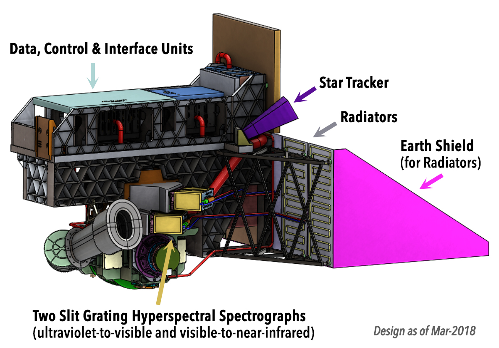
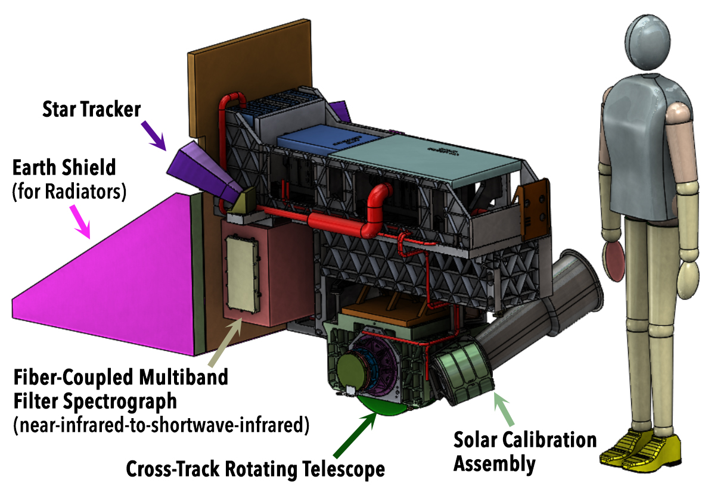
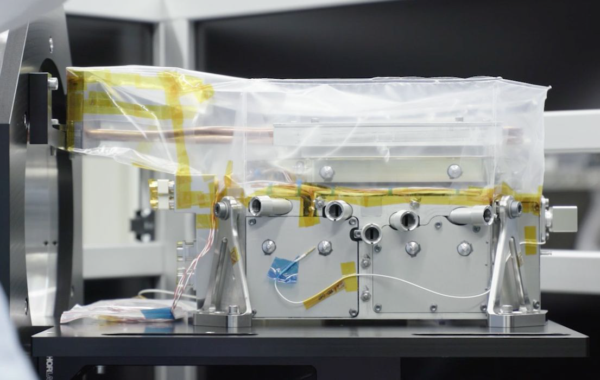
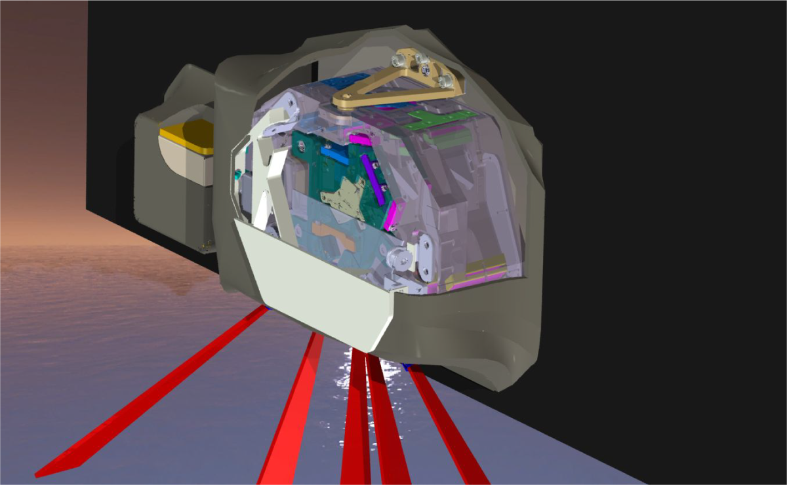
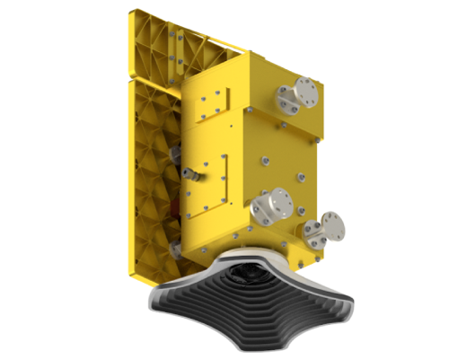
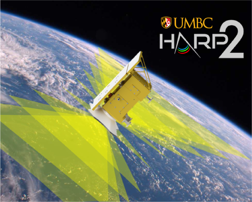
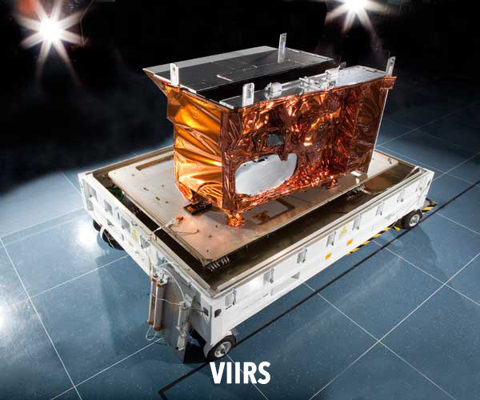
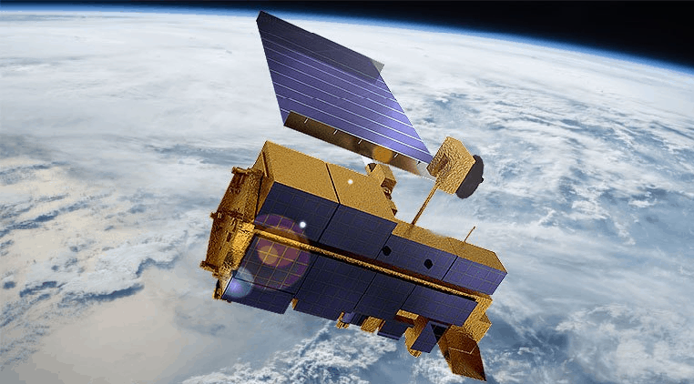

6.The PACE Satellite and Its Instruments
6.1 Introduction to the NASA PACE Satellite
- The Plankton, Aerosol, Cloud, ocean Ecosystem (PACE) satellite is a next-generation NASA Earth-observing mission designed to study our planet's oceans, atmosphere, and ecosystems in unprecedented detail.
- It plays a crucial role in advancing our understanding of climate change, ocean health, air quality, and the intricate interactions between the ocean and atmosphere.
6.2.Key Instruments on PACE
- PACE will carry three main instruments that enable it to collect comprehensive data on ocean color, aerosols, and clouds.
- These instruments are designed to capture measurements across a broad range of wavelengths, making PACE one of the most advanced Earth-observing satellites ever deployed.
- Ocean Color Instrument (OCI)
- Spectro-Polarimeter for Planetary Exploration (SPEXone)
- Hyper-Angular Rainbow Polarimeter-2 (HARP2)
6.21. Ocean Color Instrument (OCI)

- PACE's primary sensor, the Ocean Color Instrument (OCI), is a highly advanced optical spectrometer that will be used to measure properties of light over portions of the electromagnetic spectrum.
- It will enable continuous measurement of light at finer wavelength resolution than previous NASA satellite sensors, extending key system ocean color data records for climate studies.
- The color of the ocean is determined by the interaction of sunlight with substances or particles present in seawater such as chlorophyll, a green pigment found in most phytoplankton species.
- By monitoring global phytoplankton distribution and abundance with unprecedented detail, the OCI will help us to better understand the complex systems that drive ocean ecology.
- OCI Overview
- Mass : 272 kg (600 lb), current best estimate.
- Power : 237 W, current best estimate.
- Volume : 229.3 cm x 131.1 cm x 130.6 cm (90.3 in x 51.6 in x 51.4 in)
- Field of Regard :-56.0° to +56.5°, swath width of ~2700 km.
[Field of Regard (FOR) refers to the entire area or swath of the Earth's surface that a satellite sensor or instrument can potentially observe]
- Coverage :2-day global coverage at 1.2 km (0.75 mi) resolution.
[Coverage refers to the geographical area that a satellite can observe or collect data from as it orbits the Earth. ]
- Along-track tilt : 19.9°, aft in the southern hemisphere, fore in the northern hemisphere.
[Along-Track Tilt refers to the capability of a satellite to tilt its instruments forward or backward along the direction of its orbit (also known as the "track").
This feature allows the satellite to adjust the angle at which it captures images or data, which can enhance its observational capabilities and expand its coverage.]
- Ultraviolet-to-Near-infrared Spectral Range : Hyperspectral radiometry from the ultraviolet (340 nm) to near-infrared (895 nm). Bandwidth at 5 nm resolution and spectral steps of 2.5 nm (with spectral steps of 1.25 nm in a limited number of wavelength ranges). Radiances from 315 nm to 340 nm will also be provided, but the radiometric accuracy for those bands is degraded significantly
- SWIR Bands : 940, 1038, 1250, 1378, 1615, 2130, and 2260 nm.
[SWIR Bands (Shortwave Infrared bands) refer to a range of wavelengths in the electromagnetic spectrum typically between 1,100 nm and 2,500 nm (or 1.1 to 2.5 micrometers). ]
- Calibration : Refers to the process of ensuring that the instruments onboard the satellite provide accurate and consistent measurements over time.
Total calibration of instrument artifacts less than 0.5% for most bands at top-of-atmosphere.
Daily and monthly solar calibrations using two onboard solar diffusers. Bi-monthly lunar calibrations. Monthly linearity measurements with a dim solar diffuser.
- Construction of OCI

- The OCI was built at Goddard Space Flight Center (GSFC). It consists of a cross-track rotating telescope, thermal radiators, along with half-angle mirror and solar calibration mechanisms.
- The OCI's tilt will help avoid sun glint and single science detector design will inhibit image striping. Its signal-to-noise ratios will rival or exceed previous ocean color instruments
- Features of OCI :
- It has Cross track, 360° continuous rotating telescope
- Two slit grating hyperspectral spectrographs (ultraviolet to visible & visible to near-infrared, NIR)
- Fiber-coupled multiband filter spectrograph (NIR-to shortwave-infrared)
- OCI Heritage
- OCI design is based on a long heritage of NASA technology development and flight programs.
- Features include a rotating telescope, charged couple device (CCD) detector, and optics.
- System timing and data processing infrastructure have been successfully applied in earlier flight missions.
- OCI's avionics for communications and positioning incorporate a smaller electronics system developed by the iMUSTANG effort.
- he Ocean Color Instrument (OCI) on NASA's PACE satellite builds on the technology and heritage of two key instruments: VIIRS (Visible Infrared Imaging Radiometer Suite) and MODIS (Moderate Resolution Imaging Spectroradiometer).
6.22.SPEXone Polarimeter

- PACE's SPEXone instrument is a multi-angle polarimeter.
- It measures the intensity, Degree of Linear Polarization (DoLP) and Angle of Linear Polarization (AoLP) of sunlight reflected back from Earth's atmosphere, land surface, and ocean.
- The focus of the SPEXone development is to achieve a very high accuracy of DoLP measurements, which facilitates accurate characterization of aerosols in the atmosphere.
- SPEXone Overview
- Mass & Volume :Less than 15 kg (33 lb) and 6 cubic decimeters (366 in3).
- Power : Less than 20 W, current best estimate.
- Spatial Sampling :2.7 x 2.3 km2 (1.7 x 1.4 mi2)
[Spatial Sampling refers to the process by which a satellite’s sensors collect data from specific, regularly spaced points or areas on the Earth's surface.]
- Spatial Resolution :5.4 x 4.6 km2 (3.4 x 2.8 mi2).
[Spatial Resolution refers to the smallest discernible detail in an image or data set collected by a satellite sensor.
- Swath & Coverage:100 km (62 mi) swath. Global coverage in 1 month.
Swath and Coverage are two important concepts in satellite remote sensing that describe the area of the Earth's surface a satellite observes during its orbit.
- Spectral Range:385-770 nm.
pectral Range refers to the specific wavelengths of electromagnetic radiation that an instrument or sensor is designed to detect and analyze.
- Spectral Resolution: 2-5 nm for radiance, 10-40 nm for DoLP.
pectral Resolution refers to the ability of a sensor or instrument to distinguish between different wavelengths of light within the electromagnetic spectrum.
- Viewing Angles : 0°, ±20° and ±58° (on ground).
- Accuracy: 0.003 polarimetric, 2% radiometric.
- Construction of SPEXone

- SPEXone is being developed by a Dutch consortium consisting of SRON Netherlands Institute for Space Research (SRON) and Airbus Defence and Space Netherlands (Airbus DS NL), supported by optical expertise from the Netherlands Organisation for Applied Scientific Research.
- SRON and Airbus DS NL are responsible for the design, manufacturing and testing of the instrument.
- The scientific lead is in the hands of SRON.
- Features of SPEXone :
- A compact three-mirror segmented telescope assembly (patented by the consortium) to gather light from 0°, ±20° and ±50° (at satellite level) and direct the light towards a common entrance slit of a spectrometer.
- Polarization Modulation Optics (PMO) to encode the state of linear polarization in the intensity spectrum as a sinusoidal modulation.
- A compact and lightweight all-reflective imaging grating spectrometer.
- SPEXone Heritage
- For the polarization modulation technique, SPEXone is based on heritage in ground-based and airborne applications.
- The spectral modulation technique was invented by Frans Snik and Christoph Keller at Leiden University and has been further developed in the Netherlands through several national programs.
- Upgraded the SPEX Prototype into a stand-alone instrument called SPEX airborne.
- SPEX airborne operates on the high-altitude NASA ER-2 research aircraft at approximately 21 km (13 mi).
6.23. HARP2 Polarimeter

- HARP2 (Hyper-Angular Rainbow Polarimeter #2) is a wide angle imaging polarimeter designed to measure aerosol particles and clouds, as well as properties of land and water surfaces
- The amount and type of particles in suspension in the atmosphere are relevant to applications pertaining to health effects, cloud life cycle and precipitation, climate, etc.
- HARP2 will combine data from multiple along track viewing angles (up to 60), four spectral bands in the visible and near infrared ranges, and three angles of linear polarization to measure the microphysical properties of the atmospheric particles including their size distribution, amount, refractive indices and particle shape.
- HARP2 is a contributed instrument to the PACE mission, designed and built by UMBC's Earth and Space Institute.
- HARP2 Overview

- Mass:9.6 kg (21.2 lb), (current best estimate.)
- Power:11.5 W, current best estimate.
- Volume:316 x 355 x 440 mm, current best estimate.
- Field of View :94° cross track; +/- 57° along track.
- Along Track Viewing Angles:60 along track viewing angles for the 669 nm band; 10 along track viewing angles for the other 3 bands (441, 549, and 873 nm)
- Coverage :2 days global coverage at 2.6 km (1.62 miles) resolution.
- Spectral Bands :Center wavelengths: 441, 549, 669, 873 nm; Bandwidths: 15, 12, 16 and 43 nm.
- Polarization Angles:0°, 45° and 90°.
- CalibrationPolarization accuracy < 1%. Monthly lunar and solar calibrations. Cross calibration with OCI and SPEXOne instruments; Internal flat field calibrator to extend calibrations over the whole field of view.
- HARP2 Heritage
- Predecessors:
- AirHARP: The aircraft version of HARP.
- HARP 3U CubeSat: Successfully launched from the International Space Station (ISS) on 19-Feb-2020.
- Shared Features:
- All three versions (HARP2, AirHARP, HARP CubeSat) use the same basic telescope and optical system.
- Measure polarization in the visible and near-infrared (VNIR) spectral ranges.
- AirHARP Missions:
- Flown on the NASA ER2 aircraft during the ACEPOL (Aerosol Characterization from Polarimeter and Lidar) campaign.
- Flown on the NASA UC12 aircraft during the LMOS (Lake Michigan Ozone Study).
6.24.VIIRS (Visible Infrared Imaging Radiometer Suite)

- Purpose:
- Designed to collect data on ocean color, sea surface temperature, and land and atmosphere characteristics.
- Capabilities:
- Captures data in 22 spectral bands, spanning visible, near-infrared, and thermal infrared.
- Supports applications like weather forecasting, environmental monitoring, and oceanography.
- Contribution to OCI:
- Provides a heritage of high-quality ocean color measurements and multispectral imaging, which are integral to OCI's design for studying marine ecosystems and atmosphere-ocean interactions.
6.25.MODIS (Moderate Resolution Imaging Spectroradiometer)

- Purpose:
- Designed to monitor Earth's surface, atmosphere, and oceans, contributing to studies on global climate, land use, and ocean color.
- Capabilities:
- Measures in 36 spectral bands across visible, near-infrared, and thermal infrared wavelengths.
- Provides data on ocean color, cloud properties, land surface temperature, and aerosol concentrations.
- Contribution to OCI:
- MODIS has established the framework for multispectral ocean color sensing and global environmental observation, technologies and methods that OCI refines and extends with its advanced sensors.
6.26. Shared Features between VIIRS/MODIS and OCI
- Multispectral imaging: Collects data across various spectral bands to study Earth's oceans, atmosphere, and land surfaces.
- Rotating telescopes and detectors:Similar mechanical designs like rotating telescopes and CCD detectors for improved image clarity and accuracy.
- Applications:Used for monitoring ocean color, atmospheric particles, and global climate systems, all vital to the mission of OCI.
- Both VIIRS and MODIS provide the technological foundation that OCI builds on for enhanced monitoring of ocean color, aerosol particles, and clouds in Earth's atmosphere.